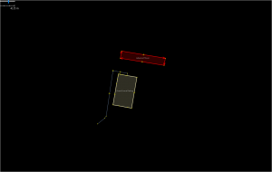
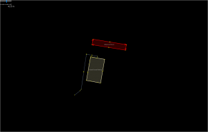

Surveying and editing the new mainline multilevel station in Birmingham proved to be a mapping challenge; involving as it did keeping a lot of the existing edits, modifying most of them and then layering on the new developments. Very similar in mapping terms to the physical work in actually renovating the stations whilst keeping it running.
The mapping is complete apart from a few pernickety errors, omissions and problems like the late completions of the taxi rank to the South of the station and the Metro Station to the North. The main improvement needed is smoothing the curves of the platforms and tracks. Getting them aligned to the lifts, escalators and stairs from the concourse above was bad enough!
One thing I haven’t been able to address is the goods delivery access to the shopping mall above the station. Previously there was a service road on the roof for delivery which was accessed via the ramp to the multistorey car park, but most of the roof is now a huge glassed dome. If anyone knows how it’s done please let me know.
The rendering limitations of OpenStreetMap meant some compromises were in order: mainly the prominence given to the pedestrian way for the Grand Central shopping mall as opposed to the pedestrian concourse underneath for the station concourse. Tagging the mall pedestrian ways as bridges was a possibility but that was really too much mapping for the renderer and not what’s on the ground.
To rectify this inability to render multiple layers, I thought I’d produce some floor plans of each level, selecting in JOSM layers various tagged levels. They’re only screenshots from JOSM as my mapping skills don’t extend to taking the data and rendering as a map- and it would just take too long to learn. If anyone else wants to have a go then please feel free! I’ve produced two versions of each, one with a dark background and one with a light background. I have done some post-editing to make the concourse more prominent rather than relying solely on the footways in the original OSM data. The plans may prove to be more useful separated like this than trying to interpret the complexity of the standard OSM map.
First New Street Station Concourse (at level 0)


Next the platforms underneath (at level -1)


Grand Central shopping mall (above the Concourse at Level 1)


And finally Level 2
 

Some of these plans might make it to our mappa-mercia maps section, as a regional resource.
A few suggestions for improvements in rendering complex public buildings like this:
- Display an icon and name for the entrances
- Display an icon for emergency exits
- Differentiate rendering for stairs and escalators
- Show direction of travel for escalators and stairs
- Display an icon for ticket barriers (turnstiles)
- Tagging schema for internal concourses and thoroughfares (maybe just add indoors=yes to highway=pedestrian and area=yes)
- Opacity differentiation for multiple concourse/thoroughfare levels (even just two would be useful)
- Specifically for railway stations – get the platform rendering to behave as if it understood OSM layers!
And apologies to anyone involved in indoor mapping – I found the documentation just too complex and confusing, but I’d like to learn. If anyone can review the data and demonstrate how to make a complete 3-D multilayer model I’d be very appreciative.


{kind=link}
{kind=link}
{kind=link}
{kind=link}